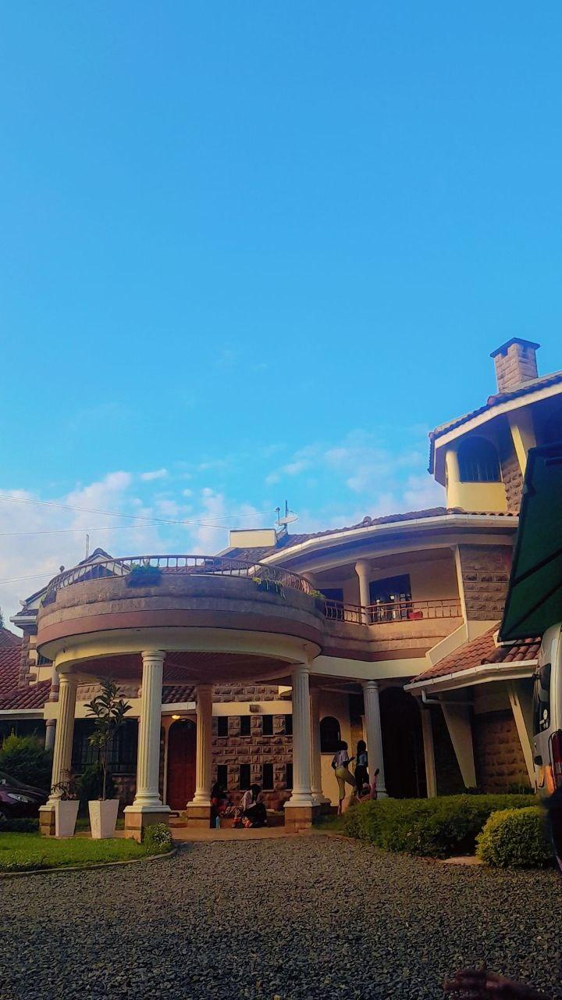
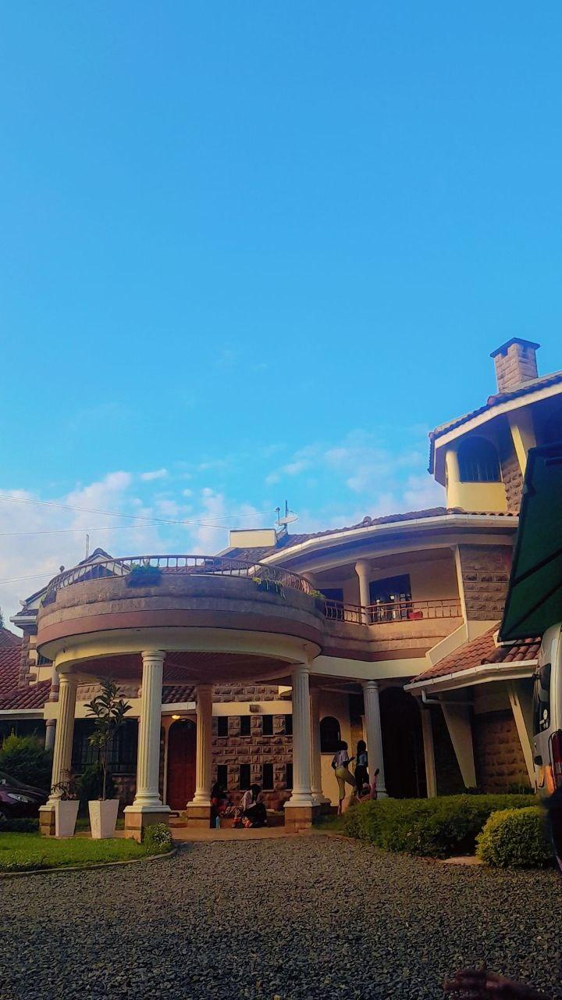
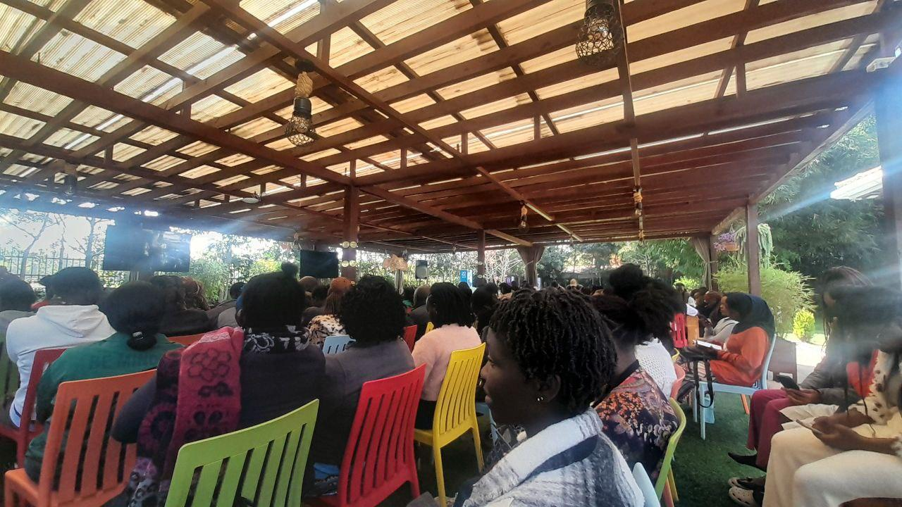

The first week has been an incredible journey filled with learning and new experiences. I could not have asked for a better start at AkiraChix!
Each day began with inspiring talks from industry experts who shared their journeys and insights, motivating us to push our boundaries.
At first it was a bit hard for me for the fact that i have never been out of Ethiopia,it took me some time to adapt to the new environmet.
I hope all those good and not so good experienes will upgrade me to some level.
I believe will Work on real-world projects that enhance my portfolio and provide practical experience applicable to my future job opportunities.Overall,my first week at AkiraChix has ignited a passion for technology that I did not fully realize I had.I am excited for the challenges ahead and eager to continue building my skills while contributing to this amazing community.